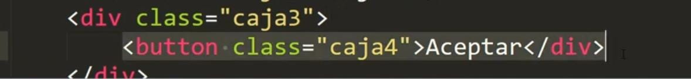

dentro de ("") se utiliza asi como en el css con los id y las class y se puede tambien poner un "." al final para o poner un style o un evento
# = id
. = class
TIPO NOMBRE
document.querySelector("#NOMBRE")
document.querySelectorAll(".class2")
UBICACION NOMBRE
document.querySelectorAll("#NOMBRE")[veces que se repite si hay 0,1,...]
document,querySelectorAll(".class2")[0]
TIPO ELEMENTO HTML
document.querySelector("tipo de elementos html")
document.querySelector("div")[1]
UBICACION ELEMENTO
document.querySelectorAll("tipo de elementos html")[veces que se repite si hay 0,1,...]
2. getElement
TIPO NOMBRE
document.getElementById("nombre Id")
document.getElemenyByClassName(caja2)[0]
UBICACION ELEMENTO
document.getElementsByIdTagName("tipo de elemento html")[veces que se repite si hay 0,1,,...]
document.getElementsByIdTagName("div")[0]
ID Y CLASS SUS DIFERENCIAS
"id" se usa para identificar un elemento de forma única, mientras que "class" se usa para aplicar estilos o comportamientos a varios elementos a la vez.
ACCEDER A UN ELEMENTO POR SU RUTA

querySelectorAll
document.SelectorAll(".class3 .class4")[0]
similar a como lo hacemos en css y si hubieran mas se le agregarian con un espacios
getElement
document.get
ACTUALIZAR Elementos getElement y EL querySelector
querySelector
cuando al ponemos una variable y le asignamos a esta variable el valor de la ruta, y si aeste le pedimos cuanta cantidad de elemetos hay y si agregamos una nuevo elemento(+=) y le preguntamos cuanta cantidad de elementos hay este no se actualiza. Eje: ./teoria/2.ACTUALIZAR Elementos getElement y EL querySelector
getElement
con getElement si se actualiza los elementos tanto creados como eliminados Eje: ./teoria/2.ACTUALIZAR Elementos getElement y EL querySelector
value y innerHTML su utilidad en el html
las 2 sirven para escribir contenido dentro de un elemento HTML
.innerHTML
'innerHTML' = se utiliza para escribir contenido HTML dentro de cualquier tipo de caja div, section, nav, footer, o incluso select o button
.value
mientras que 'value' únicamente se utiliza cuando se quiere escribir un contenido dentro de un input